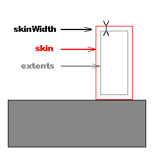

The character uses a bounding volume that is independent from already existing shapes in the SDK. Thus a dedicated collision volume for the character controller can be implemented (e.g., an ellipsoid), even if the corresponding NxShape doesn't exist.
Currently, the PhysX SDK supports two different shapes that may surround a character:
NOTE: In versions prior to 2.3 there was an NxSphereController - this has been removed since the NxCapsuleController is more robust and provides the same functionality (zero length capsule).
NOTE: Both types of controller use the Sweep API. This means that not all collidable shapes can be walked on; only those which can be swept against.
A small skin is maintained around the character's volume to avoid numerical issues that would occur if it were to touch other shapes. The size of this skin is user-defined. If rendering the character's volume for debug purposes, remember to expand the volume by the size of this skin to get accurate debug visualization.
Related parameters for the AABB:
NxControllerDesc::position
NxControllerDesc::skinWidth
NxBoxControllerDesc::extents
Related parameters for the capsule:
NxControllerDesc::position
NxControllerDesc::skinWidth
NxCapsuleControllerDesc::radius
NxCapsuleControllerDesc::height
Visual image of AABB:
